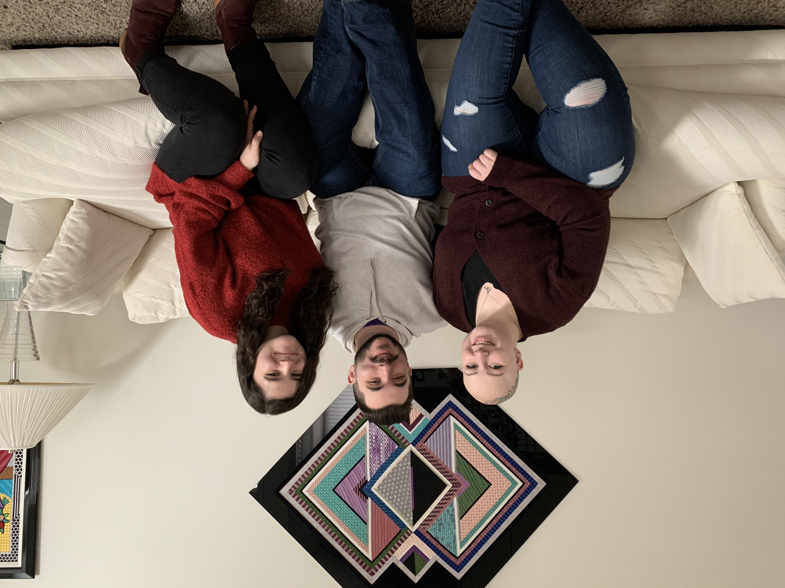
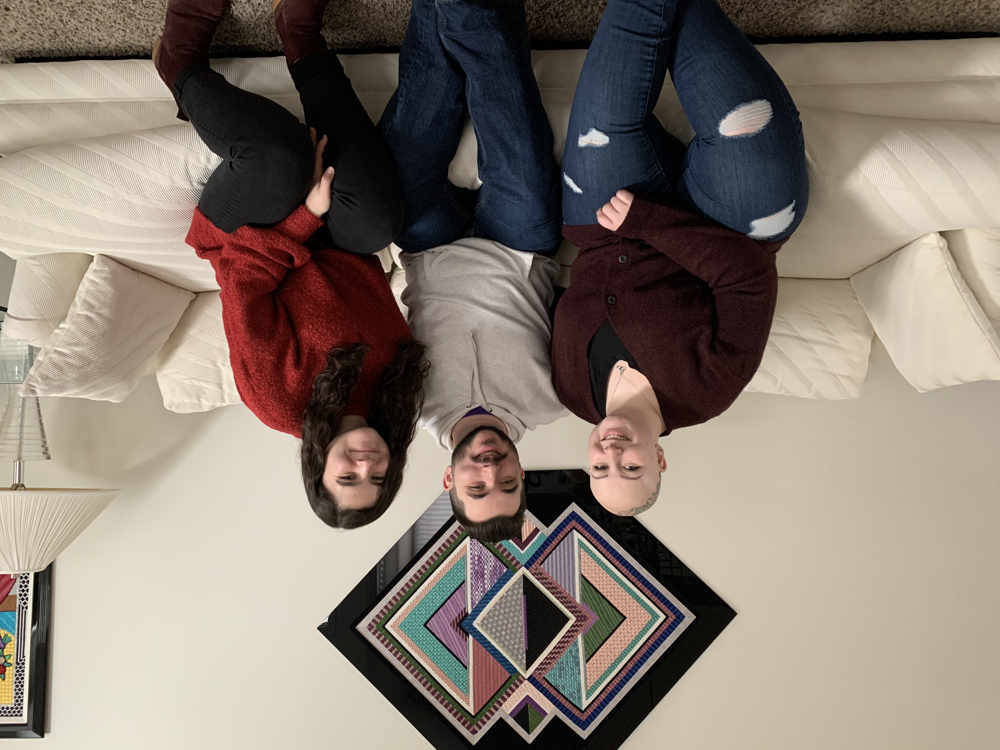

Hi, nice to meet you!
 

Rachel Meyerson is currently a senior at Columbia College Chicago, studying photography with a concentration in fashion, and minoring in social media and digital strategies. When she’s not in school or working part time as a residential leasing agent, she can be found running her own photography business, REM Photography. Rachel photographs a variety of different subjects including fashion, food, graduating seniors, families, couples, and so much more! Although Rachel has been interested in photography since she was a little kid, her passion grew in high school, when she realized she could be a photographer as a career. She loves photography because it gives her a voice in the world and allows her to express herself at the same time. Rachel’s creative eye in addition to her determination and empathy creates a professional and welcoming environment for her clients. In the future, Rachel hopes to pursue a career in fashion or food photography, and is excited to see which path the world takes her on in the year following graduation. Rachel not only strives to create bold and beautiful images, she hopes to represent all different types of beauty and backgrounds in her work, to help diversify the fashion industry and challenge society's current beauty standards.